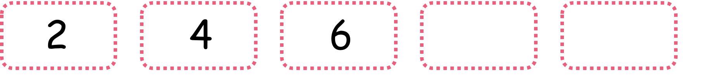
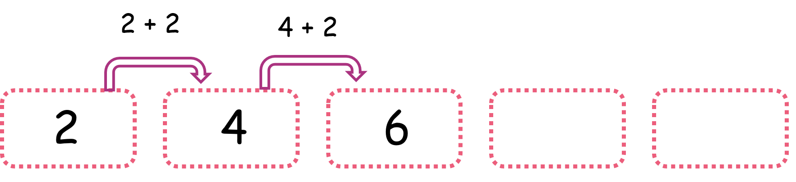
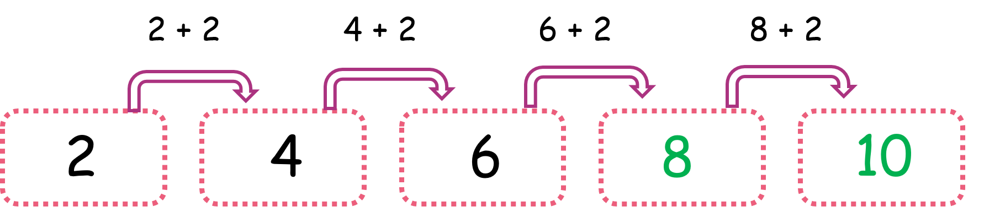
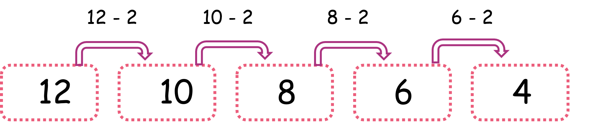

Sucesiones numéricas
En este capítulo vas a usar la suma y la resta
¿Qué son las sucesiones numéricas y para qué nos sirven?
Una sucesión numérica es una cadena de números que están unidos por una característica que comparten todos los que componen la cadena. Los números pueden tener muchas características entre sí, por ejemplo, pueden ser números que van de dos en dos, o que van de tres en tres, o pueden ser números que pertenecen a una tabla de multiplicar, o pueden ser números que van disminuyendo o van aumentando.
Las sucesiones numéricas nos sirven para fortalecer el pensamiento lógico, para ejercitarnos en la observación de las características que tienen las cosas y nos ayudan a ser más rápidos a la hora de contar usando algún patrón determinado (ya sea la suma de dos en dos o la resta de tres en tres, en fin te puedes encontrar con sucesiones de muchas formas y colores).
¿Sabes qué es lo divertido de las sucesiones numéricas? que no te vas a aburrir porque siempre encontrarás sucesiones diferentes, hasta tu mismo puedes crear una sucesión numérica.
Observa:
Esta imagen muestra el crecimiento de un hombre, observa que debajo de cada etapa hay un número que nos indica su edad. ¿Crees que cuándo las personas crecen están sumando más años o están perdiendo más años? Realmente están sumando más años, es por esto que ya sabemos que esta sucesión está hecha con una operación que es la suma, y si observa los números te darás cuenta que va en un conteo de 10 en 10, por lo cual los números están aumentando cada vez 10.
- ¿Qué vamos a aprender?
- ¿Cómo completar sucesiones numéricas?
- ¿Cómo crear una sucesiones numérica?
(1)¿Cómo completar sucesiones numéricas?
Para completar sucesiones numéricas vamos a seguir estos pasos:
Vamos a completar la siguiente sucesión siguiendo los pasos anteriores:
En esta sucesión tenemos tres números que se parecen en algo, si observas muy bien son números que están creciendo en cada casilla, además de que son números que aparecen en la tabla del 2.
Ahora que ya sabemos en qué se parecen los números de esta sucesión vamos a hallar el patrón de formación.
Regla:
¿Qué es el patrón de formación? es la clave con la cual está construida la sucesión numérica, una vez hallamos la clave podemos completar la sucesión.
Observa:
Te das cuenta que los números de la sucesión están aumentando de 2 en 2, es decir avanzan sumando 2 al último número. Esto quiere decir que el patrón de formación es +2. Como ya descubrimos la clave de la sucesión, podemos terminarla.
Observa:
Y listo! ya tienes completa la sucesión numérica.
(2)¿Cómo crear una sucesión numérica?
Para crear una sucesión numérica solo tendrás que pensar en los siguientes puntos:
A. ¿Cuál es la característica que quieres que compartan los números que formen tu sucesión?
- que aumenten o que disminuyan.
- que vayan de tres en tres, de dos en dos, de cuatro en cuatro o que sean números que aparezcan en una tabla de multiplicar. Aquí puedes usar tu creatividad y tu imaginación.
Son muchas las posibilidades tú puedes pensar en la que más te llame la atención.
B. ¿Cuál es el patrón de formación que tendrá tu sucesión numérica?
- Sumando 2, 3, 4, 5, 6, 7, etc.
- Restando 2, 3, 4, 5, 6, 7, etc.
- Multiplicando por 2, 3, 4, 5, 6, 7, etc.
Estos son solo unos ejemplos, ya sabes que hay muchas posibilidades para elegir un patrón o clave de formación.
Después de haber pensado en la característica y el patrón de formación de tu sucesión numérica puedes crearla.
Vamos a hacer un ejemplo seleccionando algunas de las opciones que te propusimos en estos tres puntos.
Observa:
Característica común: Que disminuyan los números Patrón de formación: Restando 2
Observa que en esta sucesión los números van disminuyendo, por eso usamos la resta, y decidimos que disminuyeran de 2 en 2 es por esto que el patrón de formación es -2.
Material extra para trabajar el tema de sucesiones numéricas:
En el siguiente enlace podrás descargar fichas sobre sucesiones numéricas creadas por Educapeques.com
En estos enlaces encontrarás cuadernillos sobre los números que incluye ejercicios de sucesiones numéricas creados por Edufichas.com:
Cuadernillo 1 sobre sucesiones numéricas
Cuadernillo 2 sobre sucesiones numéricas
En este enlace podrás descargar una ficha con ejercicios de sucesiones decrecientes creada por Fichasparaimprimir.com
En el enlace encontrás una ficha con ejercicios de sucesiones con suma y resta creada por Fichasparaimprimir.com
Vídeos orientativos:
En el vídeo “Series numéricas para niños” de Matecitos.com encontrarás una explicación gráfica y sencilla de lo que son las sucesiones numéricas
En el vídeo “Cómo sumar y restar con escalas numéricas” de Aula 365- Los creadores encontrarás una explicación de sumas y restas en diferentes conteos que facilitará a los niños y niñas el proceso de completar una sucesión numérica
En el vídeo “El chavo animado, series numéricas, aprende series numéricas” de FUNtasticGames4Kids encontrarás una explicación divertida sobre sucesiones numéricas